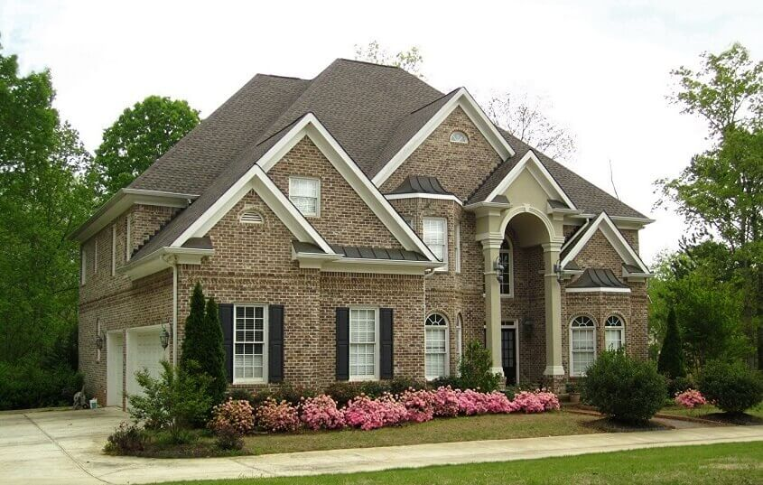
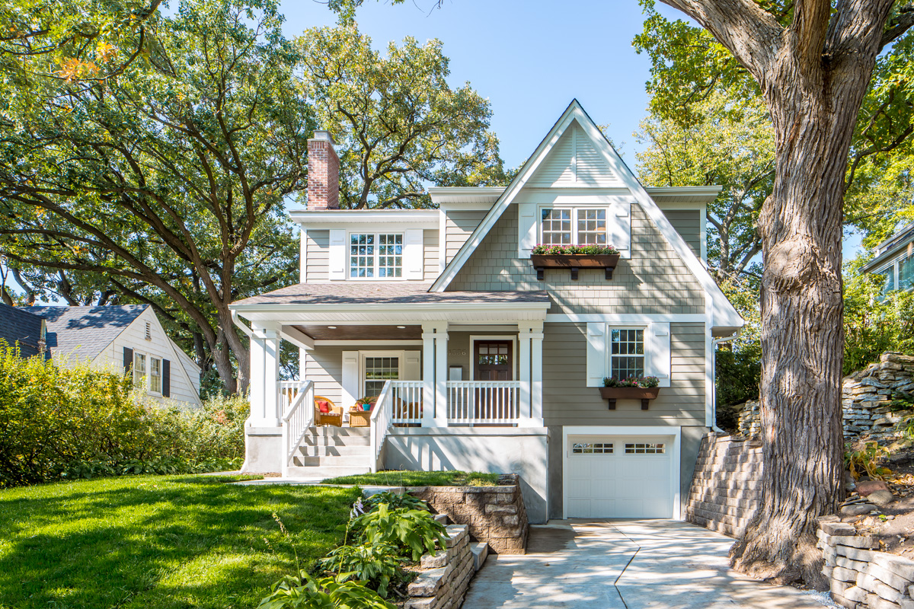
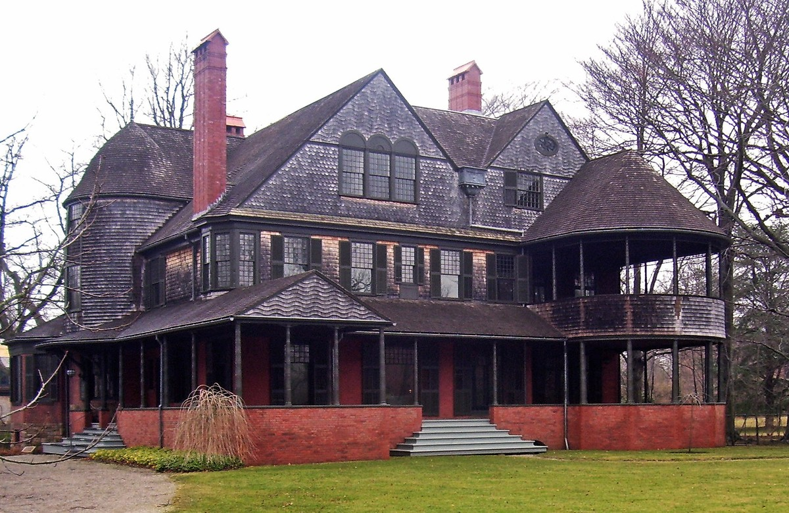
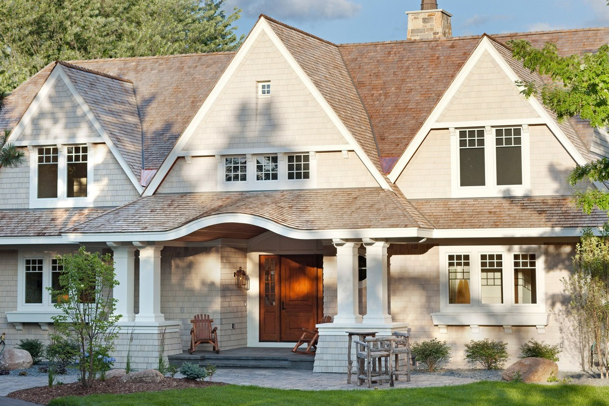

Будинок в американському стилі
Існує кілька архітектурних напрямків в екстер'єрі, які можна зустріти в містах США.
георгіанський
Такий будинок має прямокутну форму з вираженими колонами і димоходами. Він будується за каркасною технологією. У центрі знаходиться парадний вхід, а двері і вікна в американському стилі розташовуються за принципом "одні двері через п'ять вікон".


Cape Cod
Напрямок виникло в 18 столітті, коли за основу будівництва стали брати будинки жителів Англії. Типовими характеристиками такого будинку є вікна в даху, круті короткі навіси і бічна мансарда. Зовні будинок покритий вагонкою, є центральна вхідні двері, а також вікна з віконницями.
Класичний американський будинок
Класичні будинки будують з червоної цегли. Вони можуть бути виконаними в різних варіаціях: Тюдор, Вікторіанському, бунгало або федеральному. Такі будинки найчастіше можна зустріти на північному сході США.
Фермерський будинок
Планування такого будинку є великий котедж зі злегка асиметричними деталями фасаду. Головною рисою є навколишнє його з усіх боків веранда. Також будинок має напівкруглий скляний виступ, службовець обідньою зоною. Інтер'єр має на увазі три спальні, вітальню, дитячу та вітальню.


Шингл
Даний напрямок можна зустріти на Східному узбережжі США. Назва походить від слова shingle, що означає дерев'яний гонт, яким облицьовують дах і фасад будинку. Візитною карткою такого будинку є асиметрично розташовані вікна, квадратні колони, ряд балконів і масивні димоходи.
Інтер'єр типового будинку в американському стилі можна відтворити у себе на батьківщині. Для цього потрібно врахувати наступне:
Планування будинку за допомогою каркасної технології;
Облицювання стін сайдингом сірого, блакитного, бежевого, оливкового відтінків;
Традиційні і вузькі витягнуті вікна;
Прямокутні колони в конструкції веранди.